Geographic Data Science
Vector
(Geo)visualisation
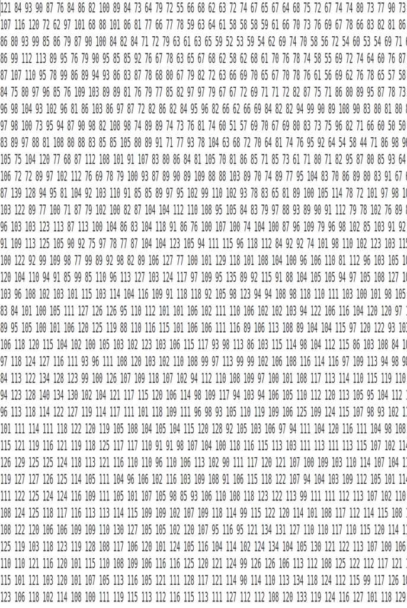

“Data graphics visually display measured quantities by means of the combined use of points, lines, a coordinate system, numbers, symbols, words, shading, and color.”
The Visual Display of Quantitative Information. Edward R. Tufte.
Visualization
By encoding information visually, they allow to present large amounts of numbers in a meaninful way. If well made, visualizations provide leads into the processes underlying the graphic.
The Visual Display of Quantitative Information. Edward R. Tufte.
Geovisualization
Tufte (1983)
“The most extensive data maps […] place millions of bits of information on a single page before our eyes. No other method for the display of statistical information is so powerful”
MacEachren (1994)
“Geographic visualization can be defined as the use of concrete visual representations –whether on paper or through computer displays or other media–to make spatial contexts and problems visible, so as to engage the most powerful human information processing abilities, those associated with vision.”
Geovisualization
- Not to replace the human in the loop, but to augment her/him.
- Augmentation through engaging the pattern recognition capabilities that our brain inherently has.
- Combines cartography, infovis and statistics
A map for everyone
Maps can fulfill several needs, looking very different depending on the end-goal.
MacEachren & Kraak (1997) identify three main dimensions:
- Knowledge of what is being plotted
- Target audience
- Degree of interactivity
MacEachren & Kraak (1997)

DiBiase’s (1990) “Swoopy”
Translating numbers into a (visual) language that the human brain “speaks better”

Exploratory Visualization
“forces us to notice what we never expected to see” (Tukey 1977: vi)
Mostly for ourselves in the course of the research process.
Many, quick and dirty, and rather unattractive graphs.
Explanatory Visualization
“forces readers to see the information the designer wanted to convey” (Kosslyn 1994: 271)
Mostly for others after the research is completed.
Few, carefully crafted, and attractive graphs.
Modifiable Area Unit Problem (Openshaw, 1984)
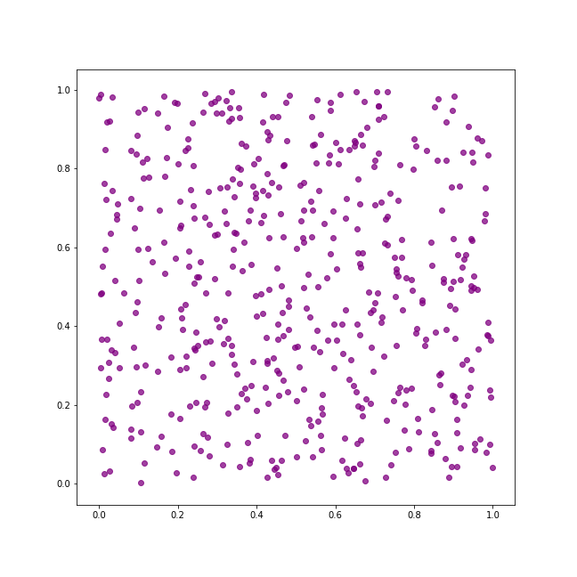
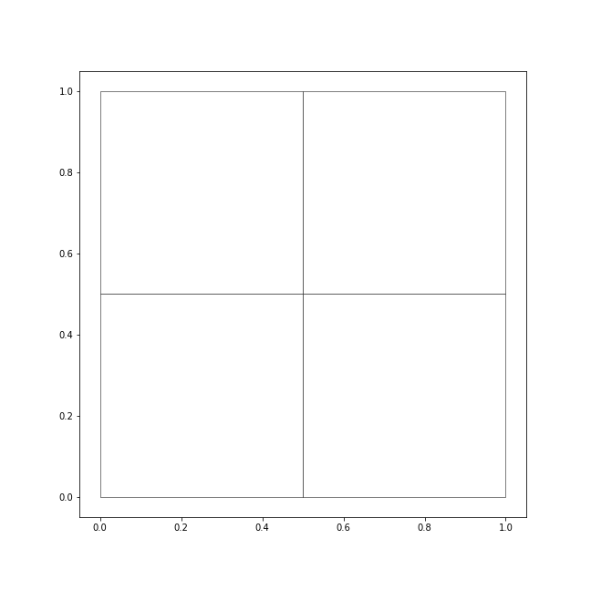
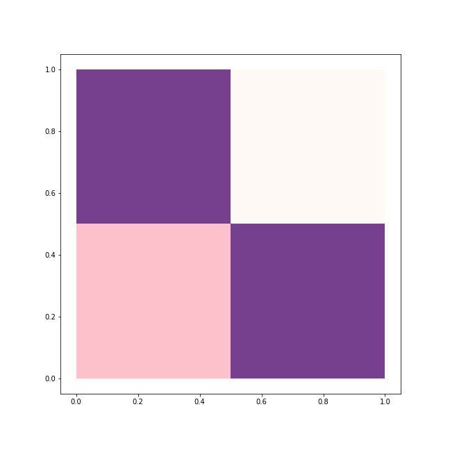
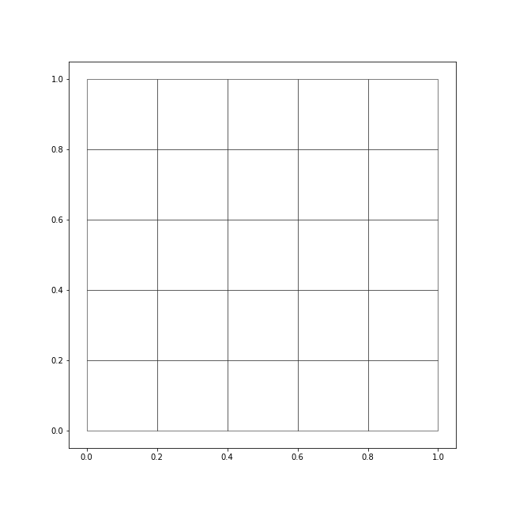
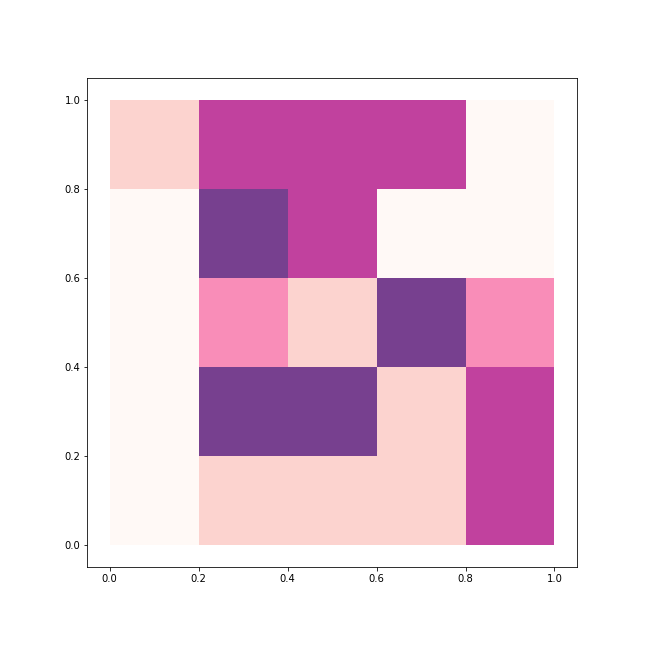
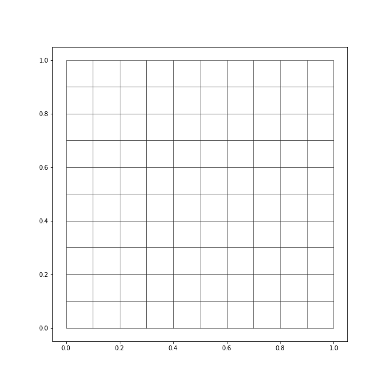
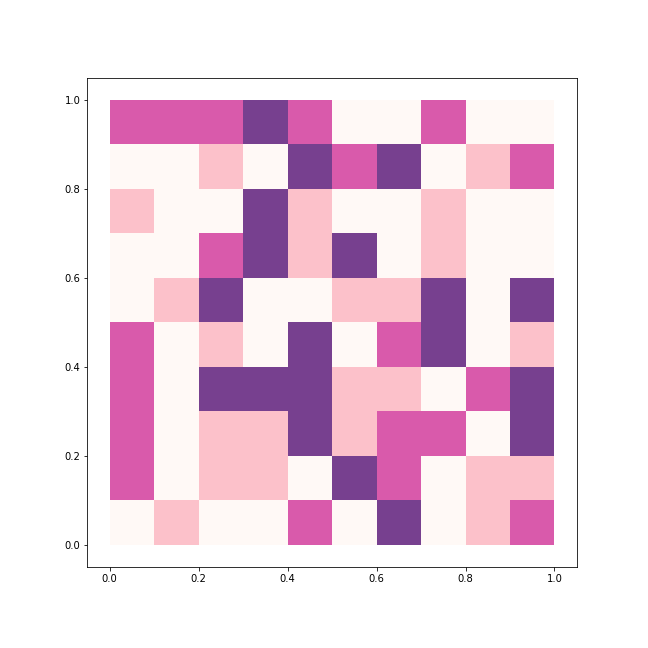
MAUP
Scale and delineation mismatch between:
- Underlying process (e.g. individuals, firms, shops)
- Unit of measurement (e.g. neighborhoods, regions, etc.)
- In some cases, it can seriously mislead analysis on aggregated data (e.g. Flint)
Always keep MAUP in mind when exploring aggregated data!!!
Choropleths
Choropleths
Thematic map in which values of a variable are encoded using a color gradient of some sort
Counterpart of the histogram
Both allows us to gage the distribution of a variable
Values are classified into specific colours: value –> bin
Information loss as a trade off for simplicity
Key decision to be made why a given value is a specific colour!
Classification choices
- N. of bins
- How to bin?
- Colours
How many bins?
- Trade-off: detail vs cognitive load
- Exact number depends on purpose of the map
- Usually not more than 12
How do we bin?
Essentially a statistical problem
Unique values
- Categorical data
- No gradient (reflect it with the colour scheme!!!)
- Examples: Religion, country of origin…
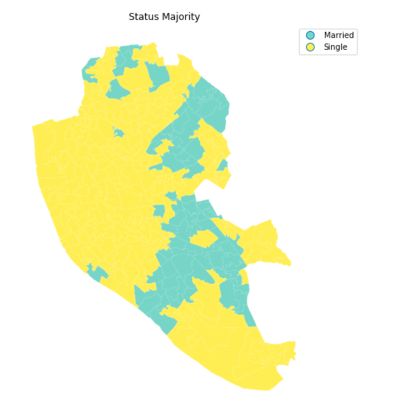
Equal interval (continuous)
- Take the value span of the data to represent and split it equally
- Splitting happens based on the numerical value
- Gives more weight to outliers if the distribution is skewed
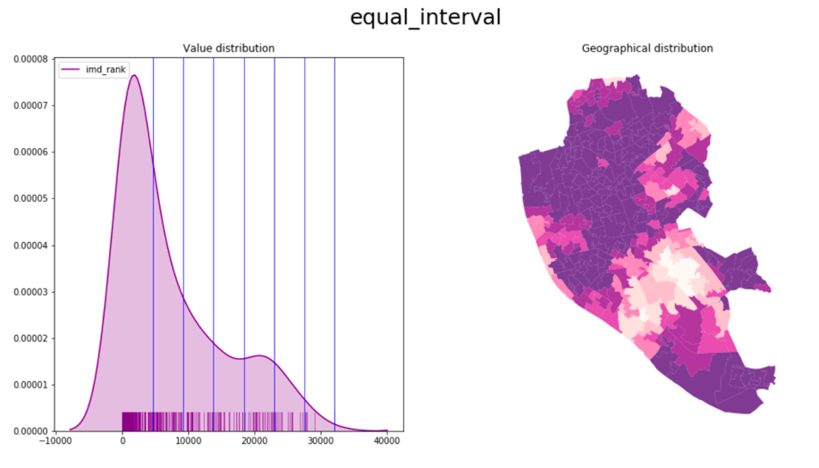
Quantile
- Regardless of numerical values, split the distribution keeping the same amount of values in each bin
- Splitting based on the rank of the value
- If distribution is skewed, it can put very different values in the same bin
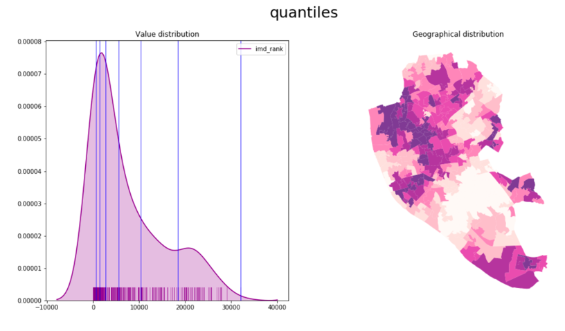
Different type of algorithms will optimize for different types of splits
- Fisher-Jenks
- Natural breaks
- Outlier maps: box maps, std. maps…
Some involve some fairly fancy statistics.
Colour palette
Categories, non-ordered
Graduated, sequential
Graduated, divergent
TIP: check ColorBrewer for guidance
Tips
- Think of the purpose of the map
- Explore by trying different classification alternatives
- Combine (geo)visualisation with other statistical devices
Beyond the classic choropleth
Bivariate choropleths
Show two variables at once, using a 3×3 (or similar) grid of colours instead of a single-colour gradient
- Each axis of the grid = one variable’s bins
- The colour a region ends up with encodes both — e.g. dark = high on both, a single hue = high on one but not the other
- Trade-off: powerful, but the legend takes real effort for a reader to decode — use sparingly, for a genuinely joint story
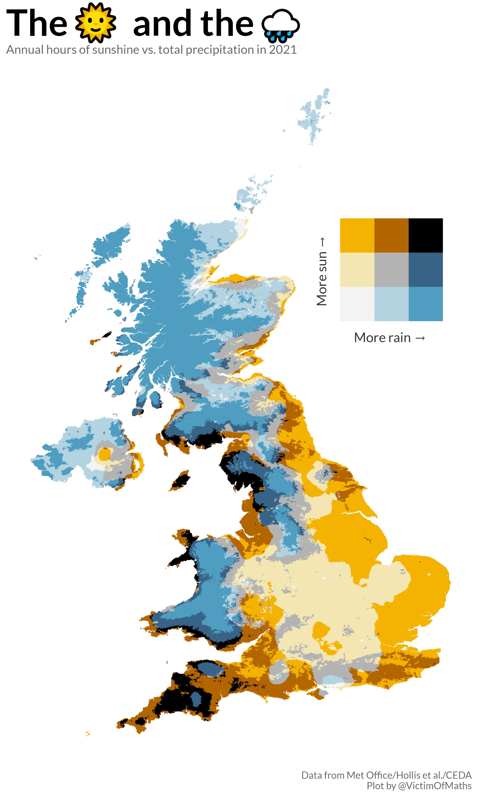
Data from Met Office/Hollis et al./CEDA. Plot by @VictimOfMaths.
For more inspiration
Browse the #30DayMapChallenge galleries — a different map type/technique set as a daily prompt each November, thousands of real entries across every style imaginable (points, lines, choropleths, 3D, GeoAI, and more):
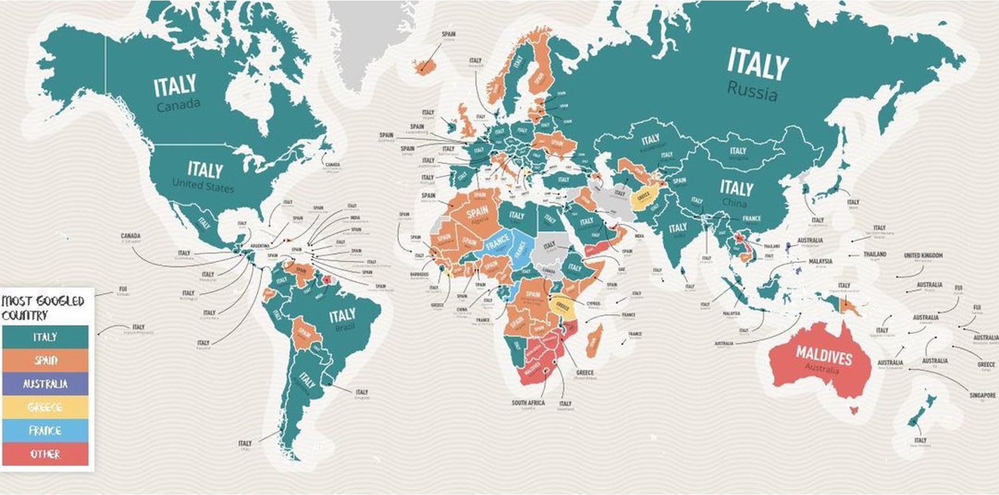
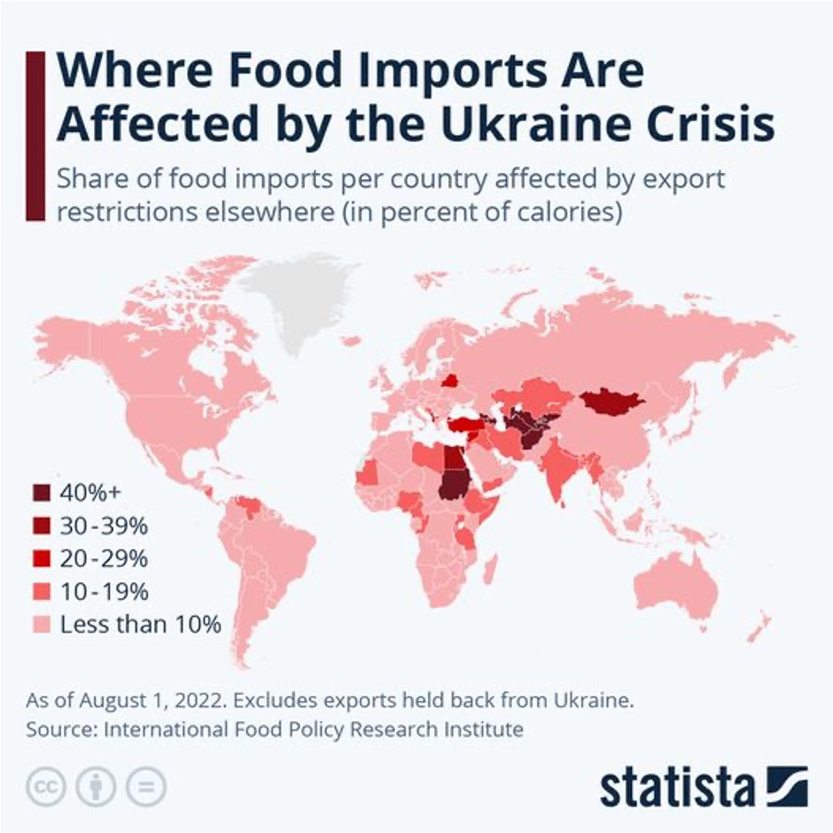
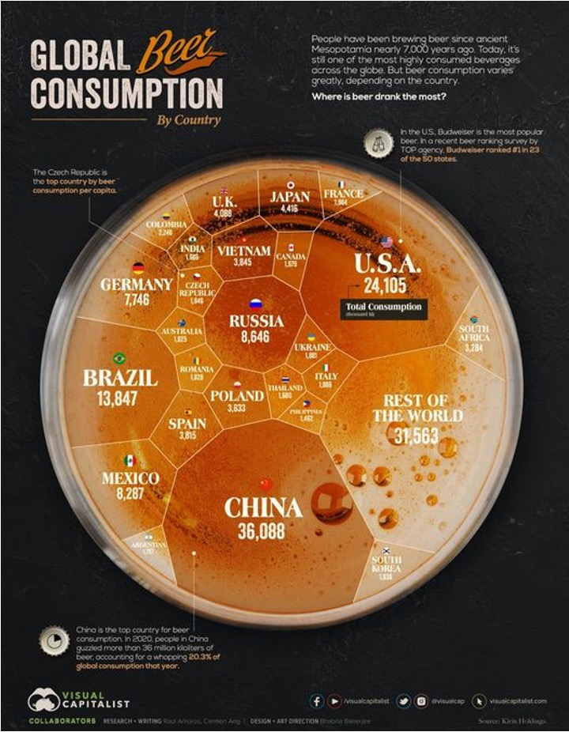
Questions

Geographic Data Science by Elisabetta Pietrostefani is licensed under a Creative Commons Attribution-ShareAlike 4.0 International License.